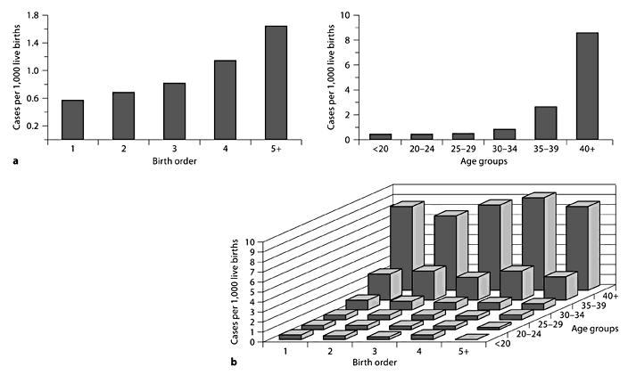

Stratification#
Stratification or principal stratification is the simplest method to control confounding.[Tripepi et al. 2010] It is represented by drawing a box on the DAG.[HarvardX PH559x]
It was proposed by Frangakis and Rubin 2002.[source] It has gained popularity since the ICH E9 addendum on statistical principles for clinical trials, which listed it as a valid approach to ICEs.[source] The use of stratification to adjust for confounding is so common that some investigators consider the terms ‘stratification’ and ‘adjustment’ synonymous. Whilst it can be used to adjust for confounding - but it can also be used to identify effect modification.[Hernán and Robins 2024]
Principal stratification involves partitioning participants into principal strata - i.e. particular values of a variable. ‘Stratification necessarily results in multiple stratum-specific effect measures (one per stratum defined by the variables L). Each of them quantifies the average causal effect in a nonoverlapping subset of the population but, in general, none of them quantifies the average causal effect in the entire population.’ Instead, they are conditional effect measures. [Hernán and Robins 2024]
‘Often, one of the principal strata is the focus of inference, but sometimes it is of interest to combine principal effects across several (or all) principal strata while accounting for a confounding effect of a post-randomization variable.’[Lipkovich et al. 2022] Hence, stratification involves either:
Restricting analysis to subset of study population with particular value of confounder.[HarvardX PH559x] This type of stratification is referred to as restriction. When positivity fails for some strata of the population (i.e. impossible to get a certain exposure), restriction is used to limit causal inference to the strata where it does hold. [Hernán and Robins 2024]
Performing analysis in each stratum of confounder.[HarvardX PH559x] For causal inference, stratification is simply applies restriction to several mutually exclusive subsets of the population, with exchangeability within each subset. [Hernán and Robins 2024]
Simple example#
Exposure: Birth order
Outcome: Down syndrome
Potential confounder: Maternal age
See figure:
(a) Association of down syndrome with birth order and age groups seperately
(b) Down syndrome cases stratified by birth order and maternal age
Can observe that crude association between birth order and Down syndrome was just due to maternal age (as in each age category, birth order did not affect down syndrome frequency, but in each birth order category, age did). [Tripepi et al. 2010]

Mantel-Haenszel Formula#
The Mantel-Haenszel formula can be used to provide a pooled odds ratio across different strata. There are alternative methods (e.g. Woolf and inverse variance) but the Mantel-Haenszel method is generally the most robust.[source]
Key steps:
Calculate crude relative risks (RR) or odds ratio (OR) (i.e. without stratifying)
Stratify by confounding variable and calculate stratum-specific RR or OR
Assess whether effect estimates are roughly homogenous across strata and do not differ from that in the whole group
If they are homogeneous, this means there is no confounding, and you can calculate the overall adjusted RR or OR by the Mantel-Haenszel formula. The pooling estimate provides an average of the stratum-specific RRs or ORs with weights proportional to the number of individuals in each stratum.
If they are heterogeneous and we are interested in effect modification, stratum-specific effect estimates should be reported separately. [Tripepi et al. 2010]
Stratification on the propensity score#
You can stratify subjects based on their propensity scores. ‘The literature showed that five strata are adequate to reduce at least 90% of the bias associated with a confounding variable. With a large sample size, we can use between 10 or 20 strata.’ [Valojerdi et al. 2018]
Limitations of stratification#
Computes conditional effect measures (not average effect measures)
Requires computation of effect measures in subsets of population defined by combining all variables required for conditional exchangeability[Hernán and Robins 2024]
This can be laborious and demands a large sample size when there is more than one confounder.[Tripepi et al. 2010] It is therefore ‘prone to sparse-data problem (it occurs when there are few or no study participants at some combinations of the outcome, exposure, and covariates) and unstable estimates’, and as such, ‘is rarely used in practice’. [Gharibzadeh et al. 2016]
This is even if we’re not interested in such effect modification. Solution: Stratification by something of interest (i.e. effect modifier) followed by IP weighting or standardisation (to adjust for confounding) allows you to deal with exchangeability (confounders) and effect modification (modifiers)
Noncollapsibility of certain effect measures like the odds ratio [Hernán and Robins 2024] - i.e. ‘the crude OR from the marginal table cannot be expressed as the weighted average of the stratum-specific ORs even in the absence of confounding’ - as ‘the magnitude of the OR is different when comparing the aggregate analysis to the subgroup analysis’ - but both estimates are still valid. Other effect measures are collapsible e.g. stratified risk ratios [Pang et al. 2013]
Requires continuous confounders to be constrained to a limited number of categories, which could generate residual confounding [Tripepi et al. 2010]